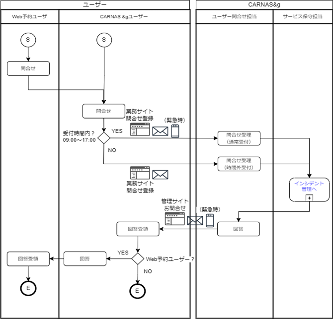

04.サービスデスク¶
4.1 概要
「サービスデスク」は、運用サービスの窓口としてCARNAS&gユーザーからの問合せや障害通告を管理する。
4.2 担当者
サービスデスクの担当は、「ユーザー問合せ担当」とする。
4.3 業務フロー
4.4 受付時間
連絡先は、サービス仕様書 を参照とする。
窓口 |
受付時間 |
連絡手段 |
備考 |
通常窓口 |
営業日09:00－17:00 |
CARNAS &g問合せ専用フォーム |
ー |
電話（緊急の場合のみ） |
|||
時間外窓口 |
上記以外の時間帯 |
CARNAS &g問合せ専用フォーム |
回答は翌営業日 |
4.5 受付の種類
サービスデスクで受付ける内容は、全てインシデントとして扱い、インシデント管理へ引き継ぐものとする。受付内容は、「障害」、「サービス要求」、「問合せ」と区分する。
インシデント区分 |
例 |
説明 |
障害 |
不具合の連絡 |
障害および不具合の連絡 |
サービス要求 |
ログインユーザーのMFA設定解除 |
システムの妨げにならない正常範囲でのユーザーリクエスト |
問合せ |
サービスに対する操作説明 |
各種問合せおよび調査の依頼 |
4.6 受付内容の記録
サービスデスクで受付けた内容は、 JIRA「CARNAS_SUPPORT」プロジェクト に記録する。記録項目は、 パイロット動作検証、利用期間中の対応フロー （「Jiraチケット説明」シート）を参照。
4.7 完了連絡
受付けた作業の完了や問い合わせへの回答等を、ユーザー問合せ担当が各連絡手段にて通知する。
4.8 詳細フロー
参照1: パイロット動作検証、利用期間中の対応フロー （「問合せ対応」シート）